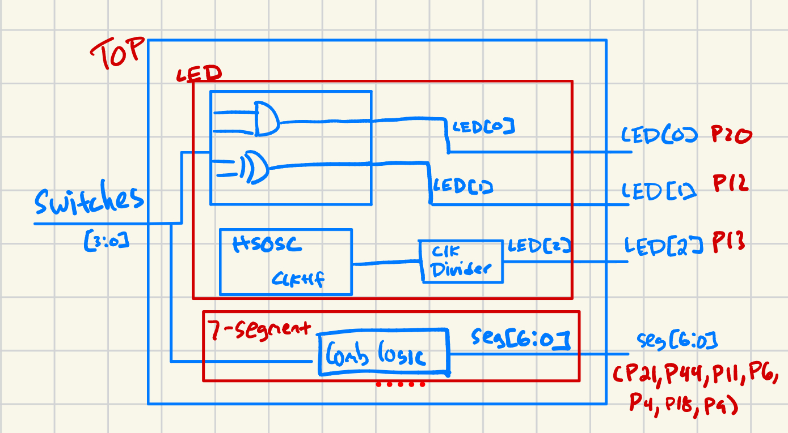
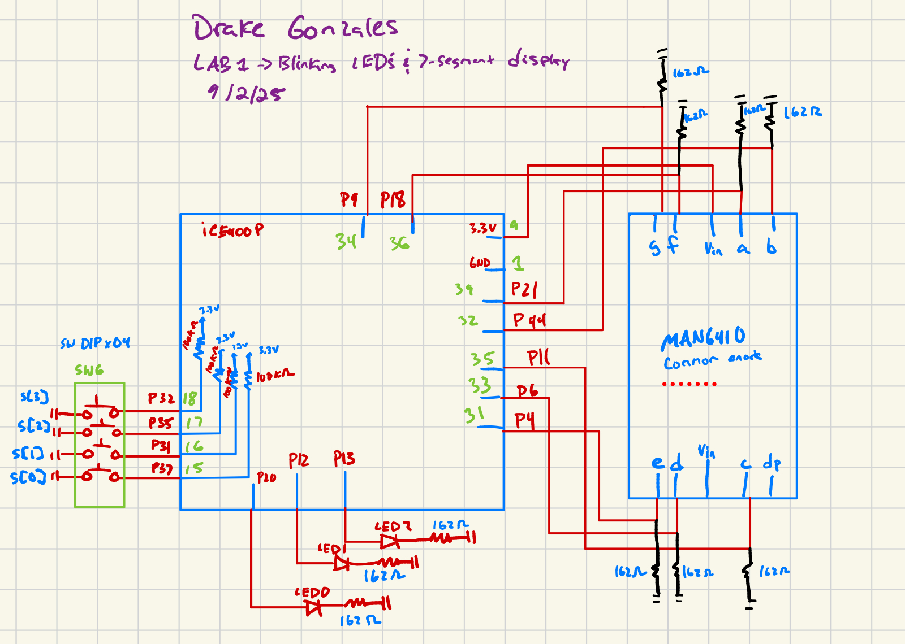
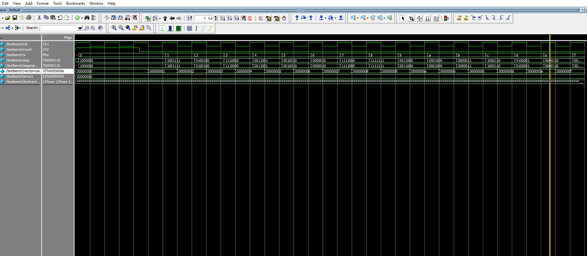
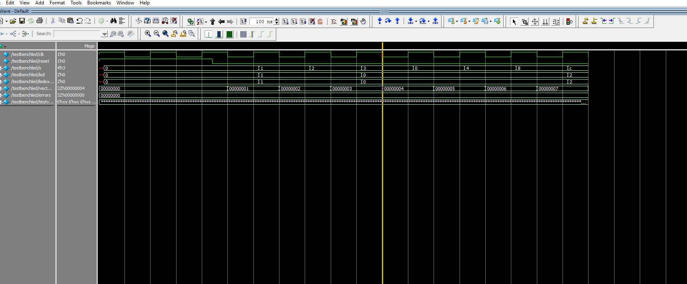
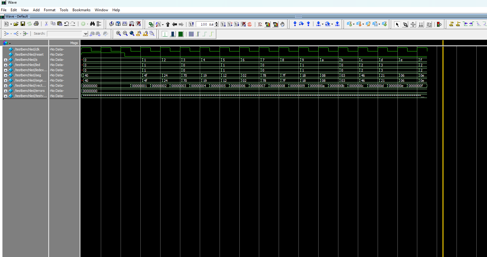

Lab 1 - A familiarization of Micro-controller units (MCU’s) and field-programmable gate arrays (FPGA’s)
Introduction
In this lab, a development board incorporating an MCU, an FPGA, and LEDs was created as the platform for exploring embedded systems. A design was implemented on the FPGA to control a 7-segment LED display and three individual LEDs. Once this lab is completed, four switches will have the capability of displaying all hexadecimal digits on the 7-segment display, and will be able to control two other LED’s based on combinational logic. The third LED will be controlled by a High-Speed Oscillator (HSOSC) have have a blink frequency of 2.4Hz.
The design was developed using SystemVerilog, a hardware description language, and was tested using Intels Questa, a logic waveform simulator.
Technical Documentation
The source code for this lab can be found in this GitHub repo.
Equations
To find the overall input current for the design the formula V-Vf-IR=0 was used. The knowns for this equation are Vin, which is 3.3V, Vf, which is 2.1V, and the resistance used was 162Ω based on how bright the light was. Using this, the current comes out to 7.41mA, which is the upperbound of acceptable current going into FPGA pins.
Next, to be able to solve for the correct clock cycles to correctly toggle led[2], solve first for time by doing 1/F, which is 0.416 seconds for two toggles (on and off). Then divide this by 2 to get 1 toggle (on), which is 0.208 seconds. Finally, to solve for amount of cycles the equation is N = t(toggle)* frequency(clk). Solving for this, N comes out to be 10,000,000 cycles.
Block Diagram

The block diagram pictured above in Figure 1 displays the internal design of the components used in our FPGA and the 7-segment display. Within the FPGA is pictured an AND gate, an XOR gate, an HSOSC (used as a clock divider), and a combinational logic block used to light our LED’s.
Wiring Schematic

Figure 2 above pictures the electrical circuit related to the FPGA and the 7-segment display. It portrays both modules along with the pins used for each module, and the necessary switches, LED’s, and pull down resistors needed. All output LED’s used were connected to 162Ω resistors to limit the input current directed toward the FPGA.
Results and Discussion
The design implemented onto the FPGA met the primary objective of this lab, which was to display hexadecimal digits on the 7-segment display and control three onboard LEDs. The design created was also very accurate in its ability to display all sixteen hexadecimal values clearly, with each digit easily distinguishable from the others. The timing performance was reliable, and no noticeable delays or glitches occurred during operation. Furthermore, all three LED’s responded correctly to the switch inputs which showed that the logic was implemented correctly on the FPGA.
Testbench Simulation
The following simulations were run on Intel’s Questa. This was done to visually see the waveforms created as a result of the logic used. To complete this simulation, a testbench was created to run test vectors through the logic created. Every couple of clock cycles a new combination of switches will be ran through the logic to test accuracy. The testbench then records the clock, the inputs, the outputs, and the expected outputs based on the test vectors.
7-segment Display Simulation

Above shows a successful simulation of our 7-segment display. Each output corresponds to the expected output which shows correct usage of combinational logic within out 7-segment module.
LED Display Simulation

Above again shows a successful simulation but for the three LED’s. Each output again corresponds to the expected output which suggests that our LED’s will perform correctly when wired together. Not pictured above is Led[2], which was validated using an oscilliscope.
Top Module Simulation

Above is the overall module from our implemented design. It shows both outputs, their expected values, and the input into our system. This simulation was another success based on our outputs and the expected outputs from our test vectors.
Conclusion
The design created successfully showed all hexadecimal digits on the 7-segment display, and blinked three LED’s based on four input switches. This lab was completed in 12 hours.
AI Prototype
Below is the code generated from Claude, an LLM specializing in programming.
module led_blinker ( output logic led );
// Internal oscillator clock signal
logic clk_48mhz;
// Counter for frequency division
// 48MHz / 2Hz = 24M counts per half period
// Need 25 bits to count up to 24M (2^25 = 33.5M)
logic [24:0] counter;
// LED state register
logic led_state;
// Instantiate the internal high-frequency oscillator
// HFOSC primitive for UP5K - runs at 48 MHz
SB_HFOSC #(
.CLKHF_DIV("0b00") // No division, full 48 MHz
) hfosc_inst (
.CLKHFPU(1'b1), // Power up the oscillator
.CLKHFEN(1'b1), // Enable the oscillator
.CLKHF(clk_48mhz) // 48 MHz output clock
);
// Calculate the count needed for 2 Hz toggle (1 Hz blink)
// 48,000,000 / 4 = 12,000,000 counts per quarter period
// This gives us 2 Hz toggle rate (1 Hz visible blink)
localparam logic [24:0] TOGGLE_COUNT = 25'd12_000_000;
// Counter and LED control logic
always_ff @(posedge clk_48mhz) begin
if (counter >= TOGGLE_COUNT - 1) begin
counter <= '0; // Reset counter using SystemVerilog syntax
led_state <= ~led_state; // Toggle LED state
end else begin
counter <= counter + 1'b1;
end
end
// Output assignment
assign led = led_state;endmodule
Code Review
The output from the LLM from above is pretty sophisticated. It hosts the correct inputs and outputs, and the module initializes the HSOSC to blink a frequency of 2 Hz. The only problem that was encountered with the output from this LLM is that it did not get the correct clock High-Speed Oscillator library. The error can be seen below.
INFO <2043018> - C:/Users/drgonzales/e155-lab1-main/fpga/src/lab1/source/impl_1/Ailab1.sv(1,8-1,14) (VERI-1018) compiling module ‘AiLab1’ WARNING <2043063> - C:/Users/drgonzales/e155-lab1-main/fpga/src/lab1/source/impl_1/Ailab1.sv(18,5-24,7) (VERI-1063) instantiating unknown module ‘SB_HFOSC’ Done: design load finished with (0) errors, and (4) warnings
Radiant (the synthesizer) hosts a wide variety of libraries that pertain to different FPGA’s. Claude probably got confused on which library to use as a result. However, the overall logic generated by Claude flowed well and showed no errors on the synthesizer. Next time when using Claude, or any LLM, be sure to correctly outline which libraries to be used for each module.